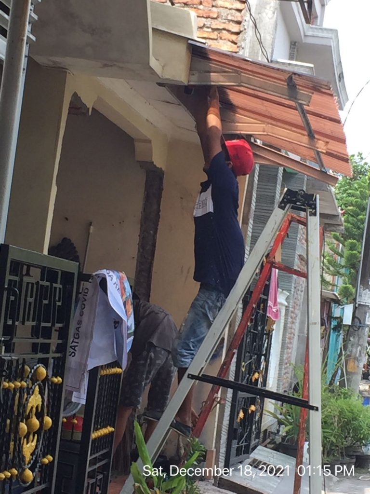
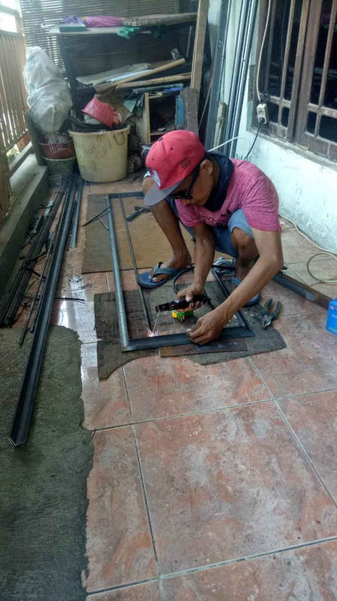
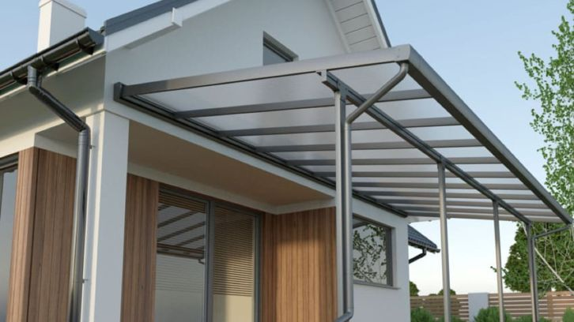
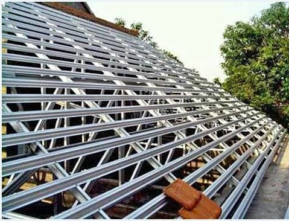

Siap panggilan area Semarang pekerjaan las bangunan, bikin mebel besi, kanopi, dan instalasi listrik. Tim Awy co tenaga professional harga terjangkau.
Mengerjakan pekerjaan las untuk segala kebutuhan. Sebagai tukang las Semarang siap datang ke lokasi Anda untuk cek kondisi dan kebutuhan pekerjaan, langsung nego harga, deal, langsung digarap. Kami pasti memberikan harga dan kualitas terbaik.
Beberapa benda yang sering membutuhkan las di antaranya teralis jendela, pintu besi, kanopi, pagar, railing tangga, railing balkon, dan lain sebagainya. Jasa tukang las semarang selalu siap untuk pekerjaan pembuatan dan perbaikan.
Dengan tingkat kesulitan pengelasan yang berbeda-beda, maka harga jasa tukang las Semarang menyesuaikan dengan kondisi. Anda bisa menggunakan biaya borongan ataupun harian. Kami juga siap dengan harga borongan beserta material. Harga kami update sesuai dengan harga bahan bangunan di toko material Semarang.


Jasa Pembuatan pagar teralis besi Semarang
Siap membuat pagar & teralis besi untuk area Semarang dan sekitarnya. Pembuatan custom pagar besi dengan berbagai bahan sesuai dengan keinginan customer. Pembuatan pagar besi dengan material antara lain besi, stainless steel atau baja ringan. Kami siap mengerjakan segala kebutuhan pagar baik untuk rumah, gedung, apartemen, dan fasilitas umum lainnya dengan berbagai ukuran. Jasa pembuatan pagar besi yang telah berpengalaman di Semarang di bidang pengelasan dan cat semprot, agar pagar besi dan teralis awet, indah dan tahan lama. Awy co siap menerima panggilan, hubungi kami sekarang.
Jasa Pembuatan kanopi Semarang
Jika Anda yang hendak membuat kanopi untuk rumah di Semarang, silahkan hubungi kami. Penggunaan kanopi rumah di Semarang saat semakin banyak karena harganya cukup terjangkau, cara pasangnya pun dapat disesuaikan. Material kanopi yang sangat bervariasi pun dapat disesuaikan dengan anggaran yang dimiliki. Mas Awy siap membuat perencanaan biaya hingga pengerjaan atap kanopi rumah Semarang dengan harga dan kualitas terbaik.
Berbagai kanopi di Semarang siap digarap, dengan berbagai bahan pilihan seperti baja ringan, galvalum, besi hollow, dan stainless.

Jasa Pembuatan Atap Baja Ringan Semarang
Mas Awy juga melayani jasa tenaga pemasangan atap baja ringan di Semarang, untuk berbagai jenis pemasangan atap seperti; Spandek, Genteng Metal, Atap Alderon, Genteng Beton, metal pasir, dan beragam jenis atap genteng lainnya.

Jasa Instalasi Listrik Semarang
Berpengalaman dalam membuat dan memperbaiki instalasi listrik Semarang, baik untuk bangunan rumah, gedung, pabrik, dan sebagainya. Instalasi listrik harus sesuai dengan standar PLN dengan tenaga ahli yang berpengalaman. Mas Awy siap membantu menangani instalasi listrik untuk Area Semarang dan sekitarnya.